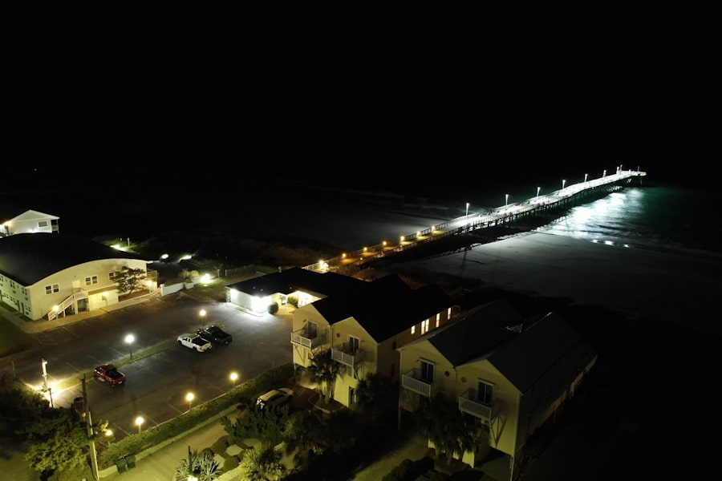

Things to Do In Topsail Beach
Spend time on the shore
Come out to our beach and swim, sunbathe, surf, and fish!
Our soundfront grants you access to the Intracoastal Waterway.
Boat on the water
- Bush Marina
- Queen Jean
Fish on the pier
The pier also has an inn if you're looking for accommodations!
Grab a bite to eat
Shop at local businesses
Enjoy fun recreation
Learn history
Learn about Topsail Island's history as a missile testing site around WWII.